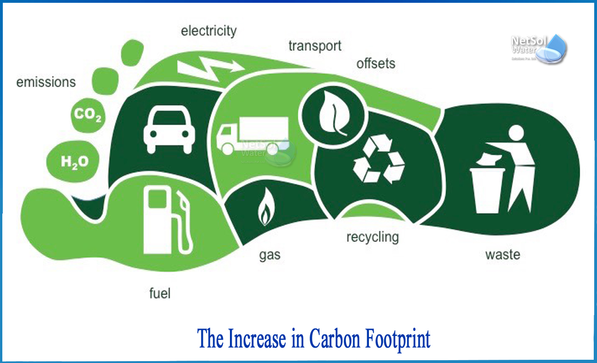

Understanding Your Carbon Footprint: Why It Matters More Than Ever
Climate change is no longer a distant or abstract issue. It is deeply connected to the way we live, travel, eat, and consume resources every single day. At the center of this connection lies a simple but powerful concept — the carbon footprint.
A carbon footprint represents the total amount of greenhouse gases, primarily carbon dioxide (CO₂), released into the atmosphere as a result of human activities. While the term often sounds technical, its impact is deeply personal.
The Hidden Sources of Emissions
Most people associate carbon emissions with factories or heavy industry. While these are significant contributors, a large portion of emissions come from everyday choices — commuting to work, using electricity, buying new products, or consuming certain types of food.
Electricity generation alone accounts for a substantial share of global emissions, especially in regions dependent on coal or fossil fuels. Similarly, frequent short car trips, air travel, and high levels of consumption quietly add up over time.
Why Measurement Is the First Step
You cannot manage what you do not measure. This principle applies just as strongly to climate action as it does to finance or health. Understanding where emissions come from allows individuals to focus on changes that actually matter.
Rather than encouraging drastic or unrealistic sacrifices, modern carbon tracking tools focus on practical insights. For many people, modest adjustments — such as reducing unnecessary car travel, improving energy efficiency, or being mindful of consumption — can significantly lower their overall footprint.

From Awareness to Long-Term Change
Awareness alone is not enough. What truly drives impact is consistency. Sustainable habits formed over months and years are far more powerful than one-time actions driven by guilt or pressure.
This is where a data-backed approach becomes essential. By visualizing emissions over time and comparing them against realistic benchmarks, individuals can see progress clearly and stay motivated. The goal is not perfection, but improvement.
Conclusion: Change That Fits Real Life
Addressing climate change does not require everyone to live the same way or make identical choices. It requires informed decision-making, transparency, and a willingness to adjust habits where possible.
Understanding your carbon footprint is not about blame. It is about clarity. With the right tools and insights, meaningful change becomes achievable — one decision at a time.